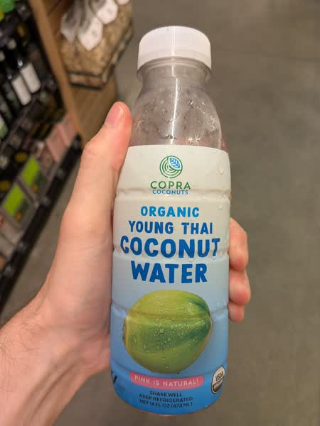

October 2026 · 16 fl oz (473 mL) · Still · Thailand · Unpasteurized · No Added Sugar · USDA Organic
Ranked 7th of 36 coconut waters I have scored · below Coaqua Sparkling (7.3) · above Zico Pure (6.9). See the full ranking.
Interesting pink water that claims to only support Thai family farms. As far as I can tell, almost all coconut farms in Thailand are family owned so this doesn't mean much. I would much prefer a fair trade designation. Otherwise just a standard nam hom option, unpasteurized but oddly frozen.
A great coconut water but not great compared to it's unpasteurized competitors. There's a weird slightly chalky texture to it. The taste is a bit too sweet and it just overall doesn't come together in a great way. But it still beats anything on the unrefrigerated shelf.
These coconuts are grown in habitats threatened by palm oil deforestation. If you find this site useful, consider donating to the Rainforest Action Network.